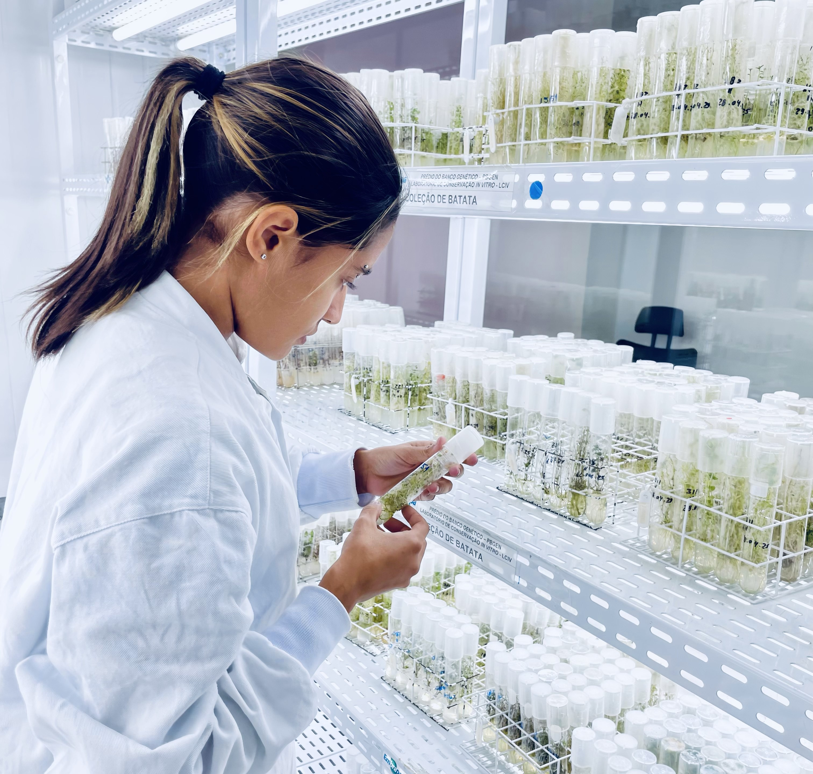
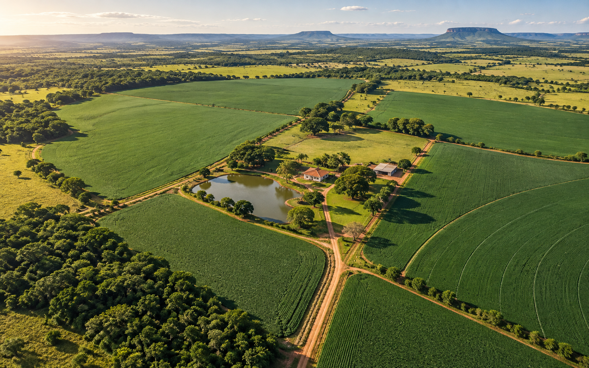
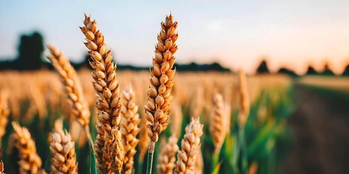

PESQUISA E TECNOLOGIAEmbrapa
Ciência e soluções para uma
agricultura mais sustentável.
Seu próximo avanço começa aqui.
Pesquise em fontes confiáveis como Embrapa, MAPA, AgroLink e SciELO
com uma experiência moderna e profissional.
Uma busca. Quatro perspectivas para ir além.
Carregando resultados...
Salvas neste navegador, neste dispositivo.
Quatro fontes de referência. Diferentes caminhos para a mesma evolução.

PESQUISA E TECNOLOGIACiência e soluções para uma
agricultura mais sustentável.

POLÍTICAS E REGULAÇÃOInformações oficiais, normas
e diretrizes para o setor agro.

INFORMAÇÃO DO AGRONotícias, cotações e conteúdos
para o dia a dia no campo.
 PRODUÇÃO CIENTÍFICA
PRODUÇÃO CIENTÍFICAArtigos e estudos científicos
para aprofundar sua pesquisa.